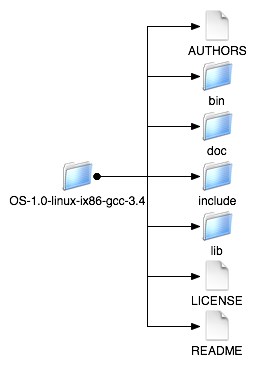

<!DOCTYPE HTML PUBLIC "-//W3C//DTD HTML 3.2 Final//EN">

<!--Converted with LaTeX2HTML 2002-2-1 (1.70)
original version by:  Nikos Drakos, CBLU, University of Leeds
* revised and updated by:  Marcus Hennecke, Ross Moore, Herb Swan
* with significant contributions from:
  Jens Lippmann, Marek Rouchal, Martin Wilck and others -->
<HTML>
<HEAD>
<TITLE>Obtaining the Binaries</TITLE>
<META NAME="description" CONTENT="Obtaining the Binaries">
<META NAME="keywords" CONTENT="osUsersManual_1">
<META NAME="resource-type" CONTENT="document">
<META NAME="distribution" CONTENT="global">

<META NAME="Generator" CONTENT="LaTeX2HTML v2002-2-1">
<META HTTP-EQUIV="Content-Style-Type" CONTENT="text/css">

<LINK REL="STYLESHEET" HREF="osUsersManual_1.css">

<LINK REL="previous" HREF="node8.html">
<LINK REL="up" HREF="node6.html">
<LINK REL="next" HREF="node10.html">
</HEAD>

<BODY >
<!--Navigation Panel-->
<A NAME="tex2html333"
  HREF="node10.html">
</A> 
<A NAME="tex2html329"
  HREF="node6.html">
</A> 
<A NAME="tex2html325"
  HREF="node8.html">
</A> 
<A NAME="tex2html331"
  HREF="node1.html">
</A>  
<BR>
<B> Next:</B> <A NAME="tex2html334"
  HREF="node10.html">Building and Testing the</A>
<B> Up:</B> <A NAME="tex2html330"
  HREF="node6.html">Downloading the OS Project</A>
<B> Previous:</B> <A NAME="tex2html326"
  HREF="node8.html">Obtaining the OS Source</A>
 &nbsp; <B>  <A NAME="tex2html332"
  HREF="node1.html">Contents</A></B> 
<BR>
<BR>
<!--End of Navigation Panel-->

<H2><A NAME="SECTION00063000000000000000"></A><A NAME="section:obtainingbinaries"></A>
<BR>
Obtaining the Binaries
</H2>

<P>
If the user does not wish to compile source code, the
OS library, OSSolverService executable, and Tomcat server software configuration are available at <TT><A NAME="tex2html11"
  HREF="http://www.coin-or.org/Binaries/OS">http://www.coin-or.org/Binaries/OS</A></TT> in binary format.  In the binary OS root there  are <TT>cpp</TT> and <TT>java</TT> directories for the compiled C++ and Java code.

<P>
In the <TT>cpp</TT> directory you will find binaries for the OS library (see Section <A HREF="node32.html#section:oslibrary">7</A>), along with the necessary COIN-OR supporting libraries,  and the <TT>OSSolverService</TT> (see Section <A HREF="node60.html#section:ossolverservice">10</A>)  executable.   All the files are packaged together as a <TT>tgz</TT> file for Unix distributions and <TT>zip</TT> file for Windows.  The distribution follows the following naming convention:

<P>
<PRE>
OS-release_number-operating_system-chip-compiler.tgz (zip)
</PRE>
For example, Release 1.0 on Linux is
<PRE>
OS-1.0-linux-ix86-gcc3.4.tgz
</PRE>
and on Windows
<PRE>
OS-1.0-win32-msvs-v8.zip
</PRE>
After unpacking the <TT>tgz</TT> or <TT>zip</TT> archives, the files in the resulting OS binary distribution are illustrated in Figure <A HREF="#figure:osbindistribution">2</A>.   In the <TT>bin</TT> directory are the executable file <TT>OSSolverService</TT>  and any other related COIN-OR executables. The <TT>doc</TT> directory contains this document, <TT>osUsersManual&#5;F1.pdf</TT>.
  In the <TT>include</TT> directory are the header files that are required if the user wishes to write code to link to OS library or any other supporting COIN-OR library in the <TT>lib</TT> directory.

<DIV ALIGN="CENTER"><A NAME="figure:osbindistribution"></A><A NAME="248"></A>
<TABLE>
<CAPTION ALIGN="BOTTOM"><STRONG>Figure 2:</STRONG>
The OS  binary distribution.</CAPTION>
<TR><TD>
<DIV ALIGN="CENTER">
</DIV></TD></TR>
</TABLE>
</DIV>

<P>
In the <TT>java</TT> directory  are the binary files required to build an Apache Tomcat-based Web service that will take SOAP envelopes with model instances in OSiL format and/or options in OSoL format, call the <TT>OSSolverService</TT>, and return the optimization result in OSrL format.  This distribution is named
<PRE>
os-distribution-release_number.zip
</PRE>
and the details and use of this distribution are described in Section <A HREF="node71.html#section:tomcat">11</A>.

<P>
<HR>
<!--Navigation Panel-->
<A NAME="tex2html333"
  HREF="node10.html">
</A> 
<A NAME="tex2html329"
  HREF="node6.html">
</A> 
<A NAME="tex2html325"
  HREF="node8.html">
</A> 
<A NAME="tex2html331"
  HREF="node1.html">
</A>  
<BR>
<B> Next:</B> <A NAME="tex2html334"
  HREF="node10.html">Building and Testing the</A>
<B> Up:</B> <A NAME="tex2html330"
  HREF="node6.html">Downloading the OS Project</A>
<B> Previous:</B> <A NAME="tex2html326"
  HREF="node8.html">Obtaining the OS Source</A>
 &nbsp; <B>  <A NAME="tex2html332"
  HREF="node1.html">Contents</A></B> 
<!--End of Navigation Panel-->
<ADDRESS>
Kipp Martin
2008-01-16
</ADDRESS>
</BODY>
</HTML>
